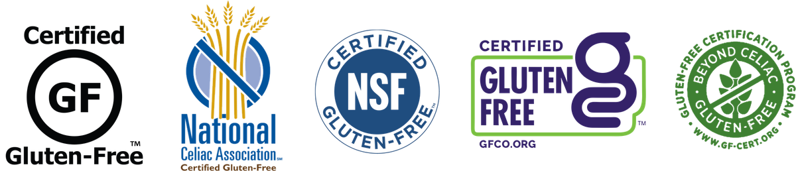

Is this gluten-free?
Not sure about a product? Grab the package and answer a few quick questions about the label.
Check the label
Does it have a certified gluten-free label?
Look for a certification seal like one of these on the package.

- Certified Gluten-Free (GF)
- National Celiac Association
- NSF Certified Gluten-Free
- GFCO Certified Gluten-Free
- Beyond Celiac Certification
Check the package
Does it say gluten-free on the package?
This is a gluten-free claim printed by the brand, without a certification seal.
Check the ingredients
Does it contain a NO or WHOA ingredient?
Read through the ingredient list and compare it to the NO and WHOA lists.
Check the allergen statement
Does it say CONTAINS or MAY CONTAIN wheat, barley, or rye?
You’ll usually find this in bold, right below the ingredient list.
Yes, it’s gluten-free
Based on the label, this product is safe for a gluten-free diet.
*This quiz is for informational purposes only. Ingredients and labels can change, so always check the package each time you buy. If you’re unsure, contact the manufacturer.
It’s gluten-free
Oats and wheat starch are the exception. Products with these ingredients should be certified gluten-free.
*This quiz is for informational purposes only. Ingredients and labels can change, so always check the package each time you buy. If you’re unsure, contact the manufacturer.
Not gluten-free
This product contains gluten or may have come in contact with it. It isn’t safe for a gluten-free diet.
*This quiz is for informational purposes only. Ingredients and labels can change, so always check the package each time you buy. If you’re unsure, contact the manufacturer.